[论文阅读笔记]where's-crypto
[论文阅读]where’s crypto
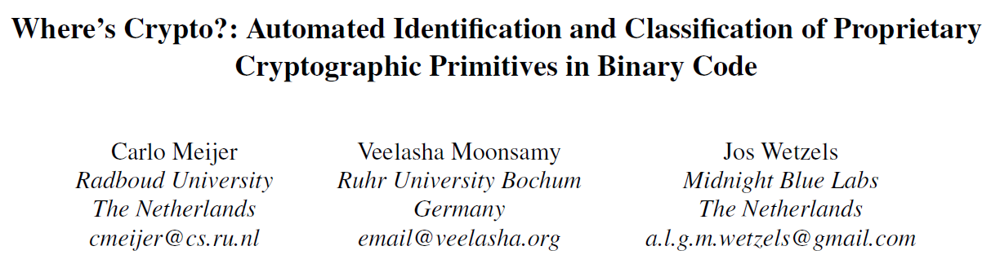
背景：专有密码学应用广泛。深入的安全分析需要在通常非常大的二进制文件中对算法进行定位和分类，因此即使在启发式方法的帮助下，手动检查也很耗时
现有的方法：DFG isomorphism(Automated identification of cryptographic
primitives in binary code with data flow graph isomorphism[43])
缺陷：仅限于已知的primitives，依赖于启发式算法来选择待分析的代码片段
解决：通过将上述方法与符号执行结合（为密码原语的分类类别指定结构签名和与分析匹配的二进制代码），克服了上述缺陷，并将分析扩展到未知的专用密码原语中
贡献：
- 将子图同构与符号执行结合，解决了片段选择的开放性问题并消除了对启发式的需求
- 提出新的domain-specific language(DSL)，用于定义密码原语的结构属性
- ida开源插件where’s crypto?
具体方案
密码原语：本质上是一组表示输入/输出关系的算术和逻辑操作
分类：纯粹为工具性，不会对算法进行排他性划分
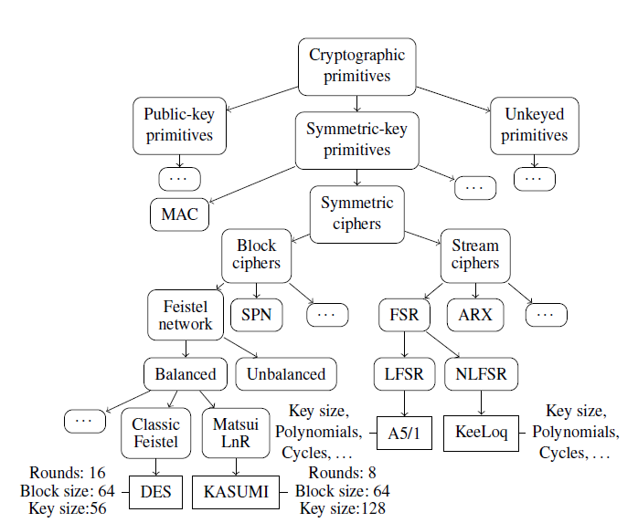
DFG:有向无环图（Directed Acyclic Graph)表示的一系列算术/逻辑运算中的数据流图
顶点代表一个操作或一个信息
顶点v1和v2间存在边表示v1（操作v1的结果）是操作v2的输入。
整体流程图如下：
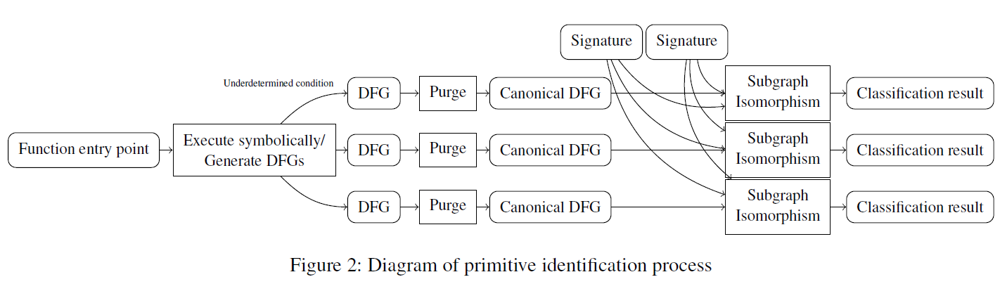
图构建
给定函数入口点，execute symbolically，同时生成DFG图 G=(V,E)，图创建过程中连续进行归一化，提高了性能。
假设有一系列汇编指令， 将每条指令i转换为一组操作Oi(可能为空（NOP或分支)，也可能包含多个操作，然后根据此创建相应的DFG图G=(V,E)。
根据输入类型分为以下三种情况
-
立即数：创建一个顶点表示G中的常数值。由边连接到Oi
-
寄存器：在写入该寄存器的最后一个值和Oi间创建一个边。实际上，这意味着为每个寄存器维护一个数组，其中包含对G中该值对应的顶点的引用
-
内存：LOAD，STORE。将内存地址顶点作为输入，与其他顶点一样，地址可以是常量，也可以是更复杂的符号表达式
图创建具体过程如下所示
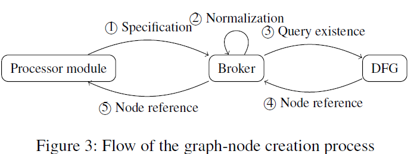
为特定架构编写的处理器模块可以将每条指令转换为图形节点，但其不能自主创建新的节点，必须与broker交互。
broker负责规范化后规则的应用，这个过程与处理器架构无关。
处理器模块向broker提供所需节点的规范，代理再将规范化后的规则应用于规范。
规范化后，broker向DFG查询是否已经存在符合规范化后规范的节点。是则返回对他的引用
因此，在符合相同规范的图中不存在两个不同的节点，或是规范化后的等效节点。
规范化：包括简化运算，公共子表达式消除和随后的内存访问
- 简化运算：输入参数为常数的算数/逻辑运算，直接由结果代替。同样，如果一个元素为其作为输入的操作的标识元素，则该操作无效且可被删除。若元素为0，可以将操作替换为0
- 公共子表达式消除：一个代码片段中，相同值被多次重新计算。
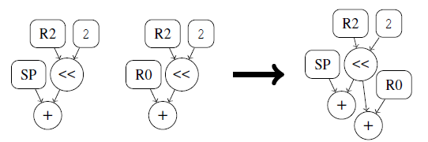
- 内存访问：将load操作替换为其结果来纠正此问题，若之前存在对同一内存地址节点的store操作，则结果是已知的。通过在图构建期间维护一个查找表（将地址节点映射到它们对应的存储值的哈希表），可以在恒定时间内执行替换。
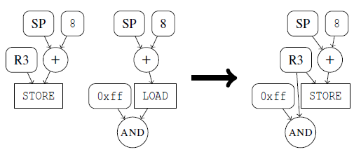
对于关联操作，结果不依赖于它们的执行顺序。因此，将嵌套的关联操作转换为接收所有输入的单个操作
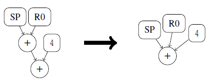
其他规则：
-
表达式x加倍，用mult(x,2)表示
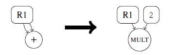
-
表达式x，常数c1，c2。当c2 < 2^(32-c1)且c1 < 32时，AND ( x >> c 1 , c2 )和AND ( ROTATE ( x , c1 ) , c2 ) 等价。用AND ( x >> c 1 , c 2 )表示
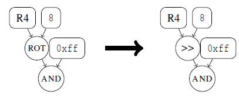
-
先乘后加
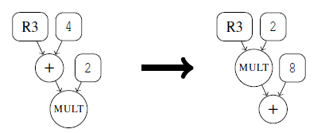
在图构建过程中应用规范化规则比在图完全生成后的优点：
- 规范化函数h有恒定的运行时间复杂度，那么构建阶段的运行时间复杂度，包括归一化，会随着汇编指令的数量线性增长，而在完全生成的DFG上重复应用则为二次复杂度
- 任何一对节点引用的等价性都可以在常数时间内进行评估，只要检查v1是否等于v2.因此可以在常数时间内实现用结果替换load操作。
符号执行：条件指令。分为以下两种情况
determined:变量被限制在一个域，因此只有一个可能的结果。如固定迭代次数组成的循环末尾的条件跳转指令。
underdetermined：输入变量的限制不足以确定固定的结果。
处理方法：
图构建首先将S = ( G , P , B )初始化为空状态，即G是空图， P = true ， B没有任何评估结果的记录。然后，开始通过处理位于函数f入口点的指令来构造。一些指令可能会操纵执行流程，例如，分支指令，在这种情况下，我们在其目标地址处继续。当我们遇到一条指令导致执行流程返回到f的调用函数时，构造就完成了。比如，在 ARM 程序集中，这是通过将f的调用者设置的寄存器LR的初始值写入程序计数器寄存器PC 来实现的
以元组( v 1 , o , v 2 )的形式表示条件c，如果v 1或v 2是非常量的，则谓词P可以充分限制v 0或v 1使得c确定；如果c未确定，则两种执行路径都是可能的，我们被迫选择遵循哪一个，或者可以通过复制状态S并随后将每个执行路径分配给其中一个实例来遵循两条路径。这样，最终的图构造由几个 DFG 组成；每个代表不同的执行路径。这种做法被称为分叉状态S。在出现未确定条件时进行分叉可最大化代码覆盖率。然而，由于状态爆炸问题，这是不可行的。因此采用path oracle来确定何时应用该方法。
何时应用分叉的策略仅与符号执行本身松散相关。Path Oracle是一个单独的实体，它在图构建阶段被查询，用于每次出现未确定的条件c。它决定c被评估为true还是false，或者构造分叉并遵循两个执行路径。
算法如下所示，谓词P被更新为包括条件c（或其否定），从而保持其定义属性满足（保证G表示f的输入/输出关系）。然后将path oracle做的决定添加到backlog B中。
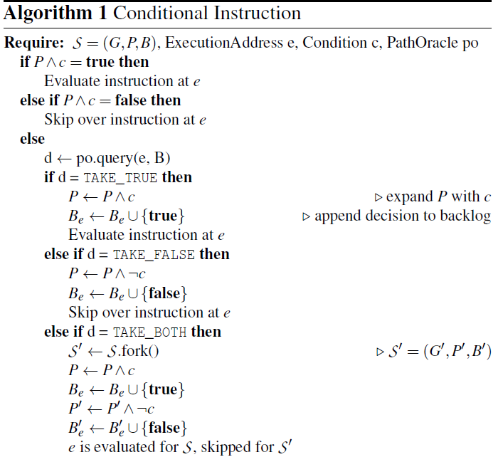
path oracle policy
对于某个数字n，获得由具有可变输入长度的恰好n次迭代组成的原语的DFG 。随后可以通过在结果 DFG 中精确搜索n次迭代来识别目标原语
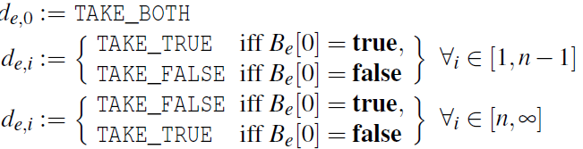
de,i表示path oracle 对在执行地址e处找到的条件指令的第i个查询的决定
7
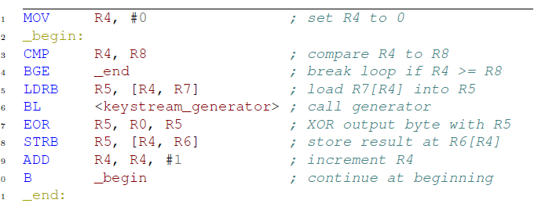
S =(G;P;B), P = true
i = 0, P = true, and c = (R8<= 0) TAKE_BOTH
P=(R8<=0),B4[0] = true(这个状态会跳转11行并退出）, and S’ = (G’;P’;B’), P’ = (R8 > 0) B’4[0] =false
S’继续循环，回到line4，c = (R8 <= 1), i = 1, P’ = (R8 > 0) and
B’4[0] = false P’^c无法确定，因此TAKE_FALSE
最后，i = n, we get c = R8 <= n and P’ =(R8>n-1). TAKE_TRUE
构建完成，得到两个图，一个对应R8<=0,一个R8=n。后者描述了算法的n次迭代，完全符合目标。前者描述零迭代，因此，包含的节点数量可以忽略不计。因此，我们接受该图在分析的后期阶段引起的少量开销。
清除
构建好后，进入清除阶段。从图中删除既不代表输入，也不代表任何输出计算中使用的值的节点。
构建完成后，图G表示f在谓词P下的输入/输出关系。但是，也包含其他信息，比如临时load/store存进堆栈 创建的节点，由broker重写的表达式
对于每个叶节点，检查其是否为f语义的一部分。如果v是以下几种情况中的任何一种，则认为它是：
- f的返回值
- store操作，且目标地址与SP寄存器无关。因此，信息存储在堆栈之外
- call操作，比如不受内联约束的函数调用
若以上都不是，则删除v以及其入边
匹配
模式匹配：在DFG中搜索与给定加密原语的图签名同构的子图。Ulmann子图同构算法来搜索DFG
表达签名图：signature domain-specific language(DSL)
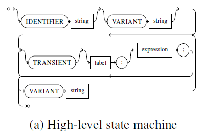
其中圆形框表示关键字，方形框表示数据类型。
- IDENTIFIER：为签名指定名称
- VARIANT：强制创建新的空DFG图(后面的表达式被添加+到图中)。因此，允许指定签名的多个变体。子图同构检测最终对所有变体进行检测。
- label（可选）：允许节点被其他表达式引用，从而实现表达式间的节点共享。
- TRANSIENT：从表达式生成的节点被认为是非必要的，可能被清除
新的图节点由表达式类型生成
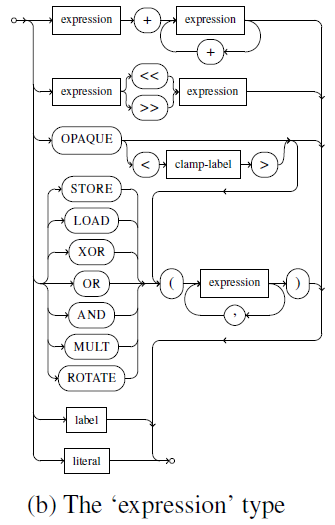
literal表示常量。
STORE ， LOAD ， XOR ， OR ， AND ， MULT和ROTATE关键字后跟括号中包含的子表达式会引发新图节点的创建。子表达式作为输入节点。
OPAQUE表示特殊的通配符节点s（通过子图同构算法与任何其他类型的节点进行比较总为真，且可以由有任意数量的输入节点，包括零个）
clamp-label（可选）：为节点类型命名。与任何其他类型的节点进行比较都为真，并增加了所有带有相同类型标签的opaque必须映射到相同类型节点的限制（type clamping)
子图同构：Ullmann算法（可剪枝的递归回溯算法），并增加了对type clamping的支持
签名：主要为symmetric and unkeyed primitives。广义上说，该制定签名方法是制定primitives的定义属性，将它们转换为抽象的DFG，最后转换为用DSL表示的签名定义
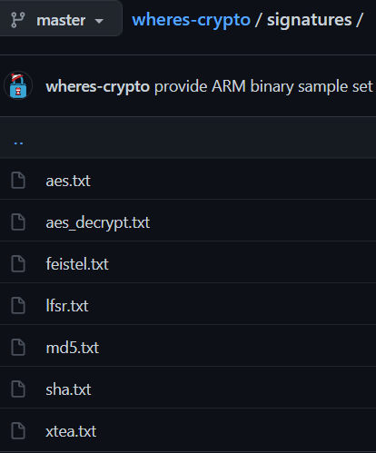
Feistel:
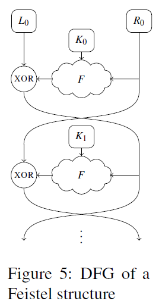
F是一组特定算法的操作，因此不知道其属性。该OPAQUE操作值包括单一操作，而F包括数目不详的操作。已知F的输入为Ri和Ki，Ki也没有已知的性质。因此，为表示F引入多种variant。variant A中，用opaque（Ri)替换F，再用opaque(opaque(Ri))替换，直到达到8层嵌套操作。4444444
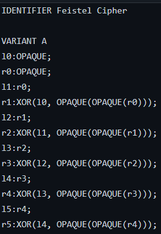
范围与局限性
-
规范化和优化：单个函数可以表示为许多不同的汇编指令组合。语义等价类和DFG间建立1-to-1 mapping超出范围。
-
隐式流：
1
2
3\\语义等价
a <- b \\b直接流向a，依赖在DFG中明显
if a then b <- true; else b <- false \\依赖信息丢失 -
函数入口点：IDA将函数入口点识别为算法的输入（可能不准确）
-
代码混淆
-
分类约束：假设寻找的算法属于已定义类别之一
-
误报：某些原始类是其他原始类的子集，有些实例符合几个类的定义
-
路径预测：编译器有时会在入口及退出时确保loop-guard evaluation，产生一个代表n + 1 次迭代的 DFG ；具有恒定迭代长度的密码原语超出了路径预测的控制范围。最后，循环展开将产生一个表示kn次迭代的 DFG ，其中k表示编译器分组的迭代次数。
测试
测试集
- [43]论文使用的数据集
- 共享库的集合以及openWRT网络设备固件的可执行部分
- 开源的专有密码实现的集合
- 现实中的嵌入式固件（PLCs，ECUs）的集合
测试方法
可调变量n：DFG中包含的算法实例的目标数量。与构建的DFG的大小有关，因此与运行时间相关。但其足够大，以便可以识别所有已有签名。特定于算法的分类器和Feistal分类器仅针对算法的单个实例，因此不受n的影响；而（N）LFSR和Sequential block permutation分类器受n的影响，因此它们基于多个实例来识别一个原语。后者（什么？）表示了一些未知压缩函数c的两个连续实例。由于重写规则旨在促进数值简化，算法的第一步与最后一步可能会分别与c的第一个和最后一个实例合并。因此，选择n=4，保证在DFG中存在两个连续的c的实例，选择大于4的话显然不会提供有关此属性的任何优势。此外，确定4个连续的DFG（实际上没有实现的代码生成的）中的LSFR轮次是极不可能的。因此，选取n=4。
结果
与Lestringant[43]比较
构建了一个尽可能忠实他们的ARM架构的新样本集。使用特定算法的签名来保证公平比较。结果如下
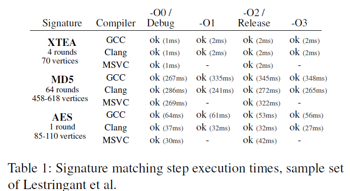
无论编译器和优化级别如何，所有样本可以通过相应签名中的某一variant成功识别。证明能够识别这些算法，而无须求助于片段选择的启发式方法。
OpenWRT二进制文件
从二进制代码构建 DFG是一种特殊的执行情况，因此会受到停机问题的影响。因此，不能保证图构建会终止。因此，引入了图构建超时时间t。
在分析libcrypto.so.1.1期间构建的所有图与图构建时间t的直方图如下所示
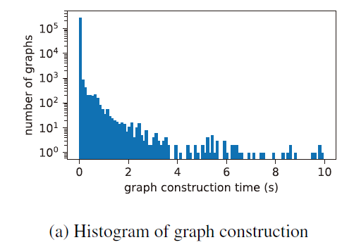
结果表明，对于绝大多数图，构造时间可以在10s内完成。因此选择t=10s
d：函数调用被内联的深度级别。
调查d的影响，同时采用不同的值，并测量运行时间和准确性方面的性能。
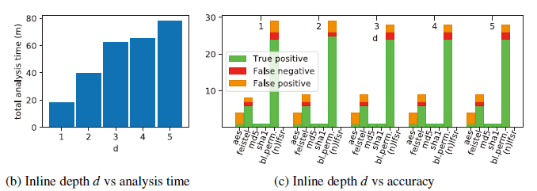
根据两者选择合理的d值，可以看出d>2时，准确性没有显著提高，而对于运行时间影响很大。因此选择d=2（True negative被省略，因为它们涵盖了绝大多数的结果，从而影响可读性 ）
- true negative:没有函数f实现密码原语a，也没有DFG图匹配到签名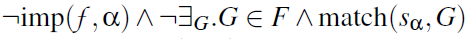
- true positive: f实现了密码原语a，有DFG图匹配到签名
- false positive:没有函数f实现密码原语a，有DFG图匹配到签名
- false negative:f实现了密码原语a，没有DFG图匹配到签名
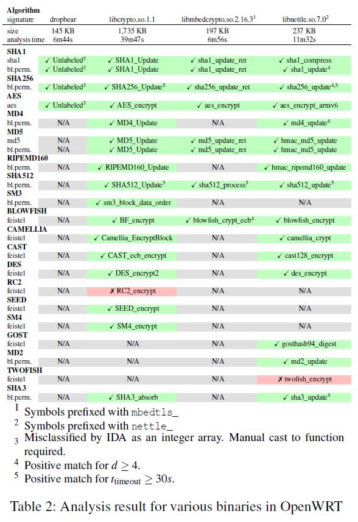
表中的每个单元格都描述了第一个positive结果的相应二进制文件中的符号名称，或者，在false negative的情况下，期望得到positive的符号名称
proprietary algorithms
一些专有算法的分析如下所示。所有签名都针对一个通用的类别，且没有一个是预先构建来适合特定样本的。除了RED PIKE，其余都成功识别，其由于使用加法而不是异或，未被识别为Feistel。
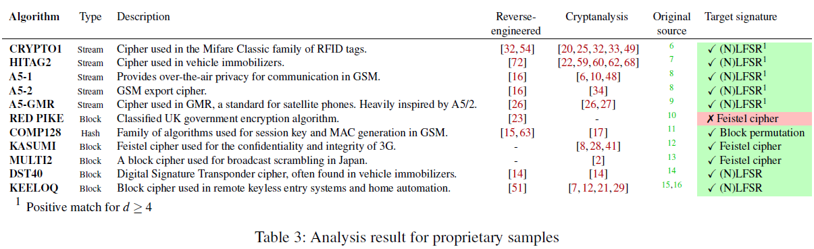
现实中的固件
Emerson ControlWave Micro RTU,
Emerson ControlWave XFC flow computer, Schneider Electric
M340 PLC and Volkswagen IPC
除了Megamaso外，所有密码原语都被成功识别。Megamaso包含NLFSR，但非线性反馈是作为子程序实现的，且移位寄存器根据其返回值通过if语句更新。这违反了基于DFG的方法固有的隐式流量限制。
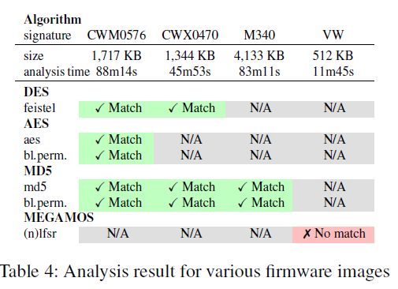
执行结果
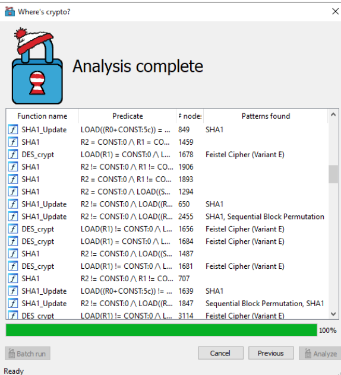
改进
- 增加signature
- 根据需求调参（不同应用场景与算法，参数的选择）、轮函数数量
- 密码原语的分类树不一定明确
- DFG无法表达代码流信息